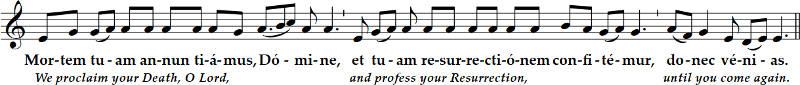
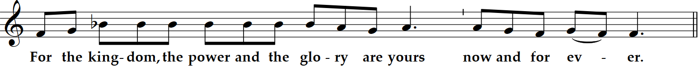

Solemnity of All Saints
6 PM Mass
Solemnity of All Saints
6 PM Mass
Prelude “Allegro ben Moderato on D” Frank Bridge (1879-1941)
Let us all rejoice in the Lord, in a day of festive celebration in honor of all Saints, at whose solemn day the angels rejoice and give praise to the Son of God.


I, John, saw another angel come up from the East, holding the seal of the living God. He cried out in a loud voice to the four angels who were given power to damage the land and the sea, "Do not damage the land or the sea or the trees until we put the seal on the foreheads of the servants of our God." I heard the number of those who had been marked with the seal, one hundred and forty-four thousand marked from every tribe of the children of Israel. After this I had a vision of a great multitude, which no one could count, from every nation, race, people, and tongue. They stood before the throne and before the Lamb, wearing white robes and holding palm branches in their hands. They cried out in a loud voice: "Salvation comes from our God, who is seated on the throne, and from the Lamb." All the angels stood around the throne and around the elders and the four living creatures. They prostrated themselves before the throne, worshiped God, and exclaimed: "Amen. Blessing and glory, wisdom and thanksgiving, honor, power, and might be to our God forever and ever. Amen." Then one of the elders spoke up and said to me, "Who are these wearing white robes, and where did they come from?" I said to him, "My lord, you are the one who knows." He said to me, "These are the ones who have survived the time of great distress; they have washed their robes and made them white in the Blood of the Lamb."
Beloved: See what love the Father has bestowed on us that we may be called the children of God. Yet so we are. The reason the world does not know us is that it did not know him. Beloved, we are God's children now; what we shall be has not yet been revealed. We do know that when it is revealed we shall be like him, for we shall see him as he is. Everyone who has this hope based on him makes himself pure, as he is pure.
When Jesus saw the crowds, he went up the mountain, and after he had sat down, his disciples came to him. He began to teach them, saying: "Blessed are the poor in spirit, for theirs is the Kingdom of heaven. Blessed are they who mourn, for they will be comforted. Blessed are the meek, for they will inherit the land. Blessed are they who hunger and thirst for righteousness, for they will be satisfied. Blessed are the merciful, for they will be shown mercy. Blessed are the clean of heart, for they will see God. Blessed are the peacemakers, for they will be called children of God. Blessed are they who are persecuted for the sake of righteousness, for theirs is the Kingdom of heaven. Blessed are you when they insult you and persecute you and utter every kind of evil against you falsely because of me. Rejoice and be glad, for your reward will be great in heaven."
Homily + Profession of Faith
I believe in one God, the Father almighty,
maker of heaven and earth,
of all things visible and invisible.
I believe in one Lord Jesus Christ,
the Only Begotten Son of God,
born of the Father before all ages.
God from God, Light from Light, true God from true God,
begotten, not made, consubstantial with the Father;
through him all things were made.
For us men and for our salvation he came down from heaven,
and by the Holy Spirit was incarnate of the Virgin Mary,
and became man.
For our sake he was crucified under Pontius Pilate,
he suffered death and was buried,
and rose again on the third day
in accordance with the Scriptures.
He ascended into heaven
and is seated at the right hand of the Father.
He will come again in glory to judge the living and the dead
and his kingdom will have no end.
I believe in the Holy Spirit, the Lord, the giver of life,
who proceeds from the Father and the Son,
who with the Father and the Son is adored and glorified,
who has spoken through the prophets.
I believe in one, holy, catholic and apostolic Church.
I confess one Baptism for the forgiveness of sins
and I look forward to the resurrection of the dead
and the life of the world to come. Amen.
Prayer of the Faithful + Offertory + Liturgy of the Eucharist
“The souls of the righteous are in the hand of God, and no malicious torment will ever touch them; in the eyes of the unwise, they seem to have died; but they are dwelling in peace, alleluia.”
May the Lord accept the sacrifice at your hands,
for the praise and glory of his name, for our good, and the good of all his holy Church.



Deliver us Lord from every evil, graciously grant peace in our day, that by the help of your mercy we may be always free from sin
and safe from all distress, as we await the blessed hope, and the coming of our Savior, Jesus Christ.

Lord, I am not worthy that you should enter under my roof, but only say the word and my soul shall be healed.
Beati mundo corde, quoniam ipsi Deum videbunt: beati pacifici, quoniam filii Dei vocabuntur: beati qui persecutionem patiuntur propter iustitiam, quoniam ipsorum est regnum caelorum. --- Blessed are the pure in heart, for they shall see God; blessed are the peacemakers, for they shall be called sons of God; blessed are those who suffer persecution for the sake of justice, for theirs is the kingdom of heaven.

Queen, mother of mercy: our life, sweetness, and hope, hail. To thee do we cry, poor banished children of Eve.
To you we sigh, mourning and weeping in this valley of tears.
Turn then, our advocate, those merciful eyes toward us. And Jesus, the blessed fruit of thy womb, after our exile, show us.
O clement, O loving, O sweet Virgin Mary
"St. Michael the Archangel, defend us in battle. Be our protection against the wickedness and snares of the devil.
May God rebuke him, we humbly pray; and do thou, O Prince of the heavenly hosts, by the power of God,
cast into hell Satan and all the evil spirits who prowl about the world seeking the ruin of souls. Amen."
Postlude “Brandenburg Concerto #2” J.S. Bach (1685-1750)